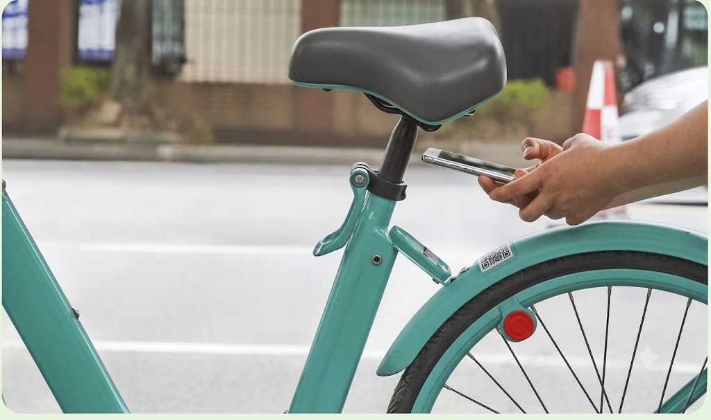

课文 1
白家月
安妮，我们在这儿呢。
Annie, chúng tôi ở đây.
安妮
天中、家月，你们猜我是怎么过来的？
Thiên Trung, Gia Nguyệt, đoán xem tôi đến đây bằng cách nào?
白家月
坐公交车吗？
Đi xe buýt à?
安妮
我先坐的公交车，然后骑共享单车，快到那边那个出口时又推了一小段。
Tôi đi xe buýt trước, sau đó đi xe đạp chia sẻ, gần đến lối ra bên kia thì dắt xe một đoạn ngắn.
白家月
我看很多人都骑共享单车，我还没骑过呢。
Tôi thấy rất nhiều người đi xe đạp chia sẻ, tôi vẫn chưa từng đi.
陈天中
我骑过，很方便的。第一次骑的时候，你打开微信，对着共享单车上的二维码扫一下，在App上完成注册就可以了，怎么使用、费用标准什么的App上都有说明。
Tôi từng đi rồi, rất tiện. Lần đầu đi, mở WeChat quét mã QR trên xe, đăng ký trên ứng dụng là được; cách dùng và mức phí đều có hướng dẫn trên ứng dụng.
白家月
好啊！哪天我出去办事时也试试。
Được! Hôm nào ra ngoài giải quyết công việc tôi cũng thử.

听对话，选择正确答案
（1）安妮是怎么到白家月的学校的？
（2）第一次骑共享单车，需要扫码后再在App上：
根据课文内容回答问题
（1）白家月骑过共享单车吗？如果没骑过，她想什么时候骑？
（2）第一次骑共享单车时应该做些什么？了解些什么？
根据给出的提示复述课文
安妮到白家月和陈天中的学校玩，她先坐……，然后……，快到一个出口时又……。白家月说她看很多人……，但她……呢。陈天中介绍说，他骑过共享单车，……。第一次……，打开微信，对着……扫一下，在App上……就可以了，而且，怎么使用、……什么的App上……。白家月听完表示，她哪天出去……。